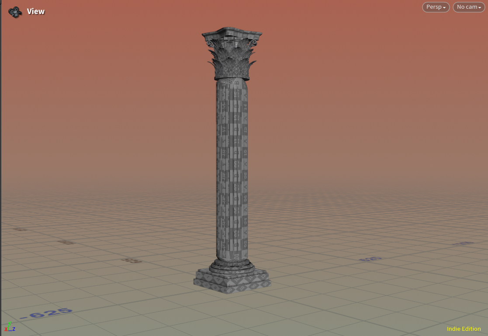

Gruss aus Karlovy Vary: Finding Method in the Houdini Madness
I have decided to write a short piece about my transition from Blender to Houdini as my primary modeling tool. To be honest, I never considered myself a seasoned Blender veteran; there are many corners of that software I haven’t explored, but it was always enough to model everything I needed. I was briefly fascinated by Geometry Nodes, but I realized that without a solid mathematical foundation, one often doesn't truly understand the underlying logic. For instance, accessing and modifying two specific vertices on an edge remained a task I struggle with to this day.
The real turning point came while I was modeling a half-timbered house (Fachwerkhaus). I spent a month meticulously building the blocks, only to realize upon exporting to Unreal Engine that the house was far too small-despite the 2.7-meter floor height appearing more than sufficient during the modeling process. I still love Blender-it was my gateway into 3D-but for my current needs, it is no longer the king.
The first thing you hear about Houdini is that the learning curve is extremely steep. I’ve been learning it for about two months now. I don’t need to perform "magic" with complex FX yet; I am working strictly within SOPs (Surface Operators)-in other words, pure geometry. The most important lesson I’ve learned so far is that you only need to master a handful of nodes to get started.
It begins with basic primitives (Box, Sphere, Tube) or generators like Add, Circle, and Line. Then come the editing tools: PolyExtrude and PolyBevel. I would like to emphasize that it’s not just about knowing these nodes exist, but truly understanding their parameters.
For example, if you want to create a quarter circle: you could take a default Circle and cut it from the side and bottom using a Clip node. Or, you can look closer at the Circle node itself and discover that by setting the Arc Type to "Open Arc" and the Arc Angle to 0–90 degrees, you get the result instantly. I expect to encounter many more of these "wow" moments. If you want to avoid feeling like a neanderthal, it simply pays off to know your nodes inside out.
Understanding Groups is where the real magic happens. By this, I don't mean manually selecting points with a mouse, but learning how to procedurally define edges or points using Group Create, Group Expression, and Group Promote. This leads me indirectly to VEX.
The website cgwiki / Joy of Vex is an incredible resource.
I owe the author a huge debt of gratitude; for me, written documentation is far easier to digest and saves a tremendous amount of time.It’s funny-when I first started with Houdini, I thought it wasn’t suited for detailed hard-surface modeling. I mostly saw examples of coarse topology. So, I’m attaching an image to prove that it can be done! :)

← Back to Devlog Index